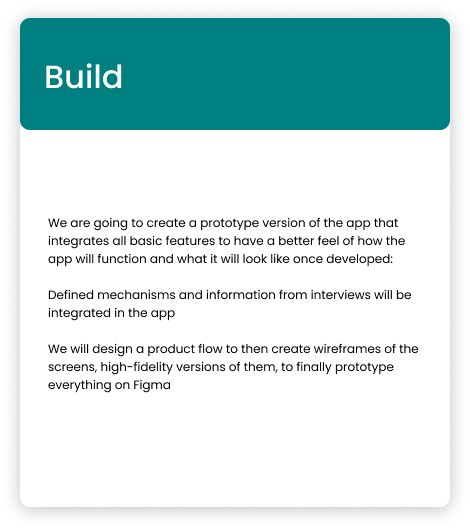
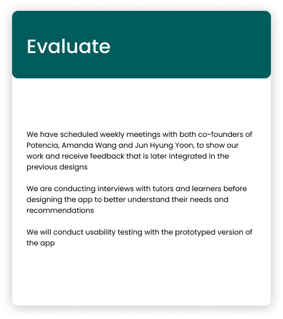
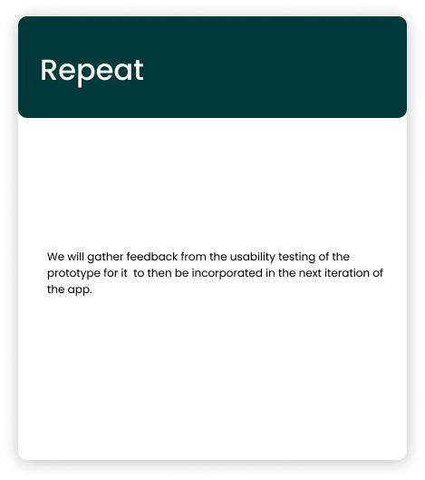
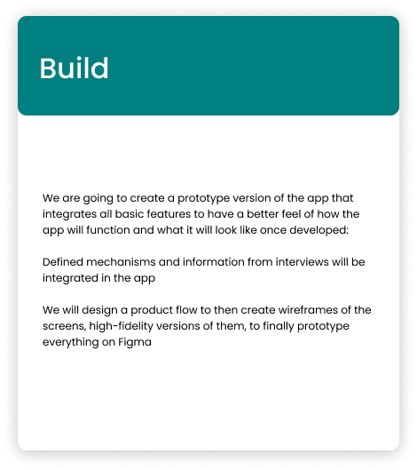
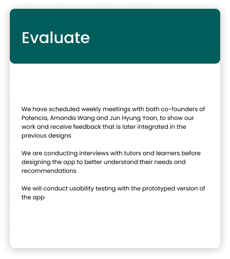
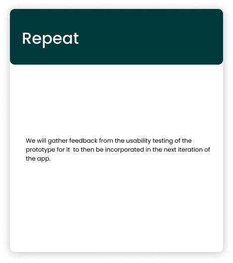
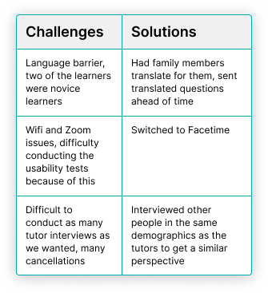

The goals of this project were to create a manual booking system, create a solution for unorganized tutor-learner communication, and help the founders establish a sense of community at Potenica.
Role and Project Context
My Role
- UX Design
- Prototyping
- Interviews
Project Context
- Semester-Long Project
- Engineering Psychology 161 @ Tufts - Human Factors in Product Development
- Iterating on existing app prototype on Figma to be developed into an iOS app
- Team: Marianne Chuy, Asma El Halwani, Britnie Nguyen, Calisa Sana, Alex Yang
About Potencia
Potencia is a Boston based non-profit tutoring organization aimed at providing affordable and accessible English education to immigrants in the United States. Many of Potencias learners are first generation immigrants with limited English proficiency. Tutors at Potencia are student volunteers who attend schools in the Boston area such as Tufts University, Northeastern University, and Boston University. Potencia was founded by Amanda Wang and Jun Hyung Yoon in 2019 through the Tufts MSIM Program. Since 2019 they have taught over 115 English learners and hope to grow significantly over the next several years. Potencia’s goal is to reach 10,000 students by the year 2025. Our team members have a deep passion for both education and design, making us the best possible team to help Potencia achieve their goals.
Objectives
- Create an efficient booking system in the app where learners can pick their tutor based on scheduling and personal preferences
- Build a chat function in the app so that all communication between learners and tutors is centralized in one place
- Aim to build a sense of community at Potencia
Persona
Our team crafted a persona who embodies a typical Potencia learner. Meet José! José is a 35 year old man living in the Medford/Somerville area. José is Brazilian and moved to the Medford/Somerville area because there is a large Brazilian community there. For work, he is a power washing technician. Many of his co-workers are also Brazilian but some of them are native English speakers; sometimes he will practice his English at work with his co-workers. José is an extremely busy man and his work schedule changes frequently based on the time of year and demand. When he is not working, he spends the majority of his time with his family as he has two young children. At times, José wishes he had stronger English speaking skills. Due to limited proficiency in English, he has run into limited employment opportunities and has had a hard time fostering a sense of community with native English speakers. Speaking English better and with more confidence would open new opportunities for José and increase his feelings of autonomy in the United States.
CLIMBER Model
After developing our persona, José, we constructed a CLIMBER model to further anticipate our users' needs. The CLIMBER model was made with Potencia as the customer in mind. By going through each stage of the CLIMBER model, it forced us to think deeply about who our customer is, what their problems are, and how we can build an application to support their needs.
 





Tutor and Learner Research Approach
Our research team split the categories for interviewees into “learner” and “tutor” to get both sides of the user experience. Three interviews were conducted with three different tutors, all of whom are college students in the Medford/Somerville or Boston area. Usability tests were completed with two acquaintances of our team members and one Potencia tutor. Tutors were instructed to go through the prototype while thinking out loud to complete the following tasks:
- Sign-in
- Select a Tutor
- Schedule a Class
- Chat with Tutor
Follow-up questions were asked to gauge the tutor's emotional reactions to our prototype - which features were helpful on each screen; what they would change on each screen; what type of features
they want to see in future iterations.
Four interviews were conducted with four different learners, varying in age, gender, race, and proficiency in English.
Two of the interviewees had family members translating for them throughout the interview. The interview questions were meant to assess their current user experience with Potencia, specifically when it came to scheduling, attendance, tracking their learning progress, and the sense of community at Potencia.
Usability tests were done with two out of the four learners interviewed.
For the usability test, we had the learner walk through the app, having them stop at any points where the information was unclear or confusing.
Interview Question Domains

Findings
Challenges
Final Designs
We created a minimalistic design featuring a primarily white color theme, but included shades of turquoise as well as orange to reflect Potencia’s branding. We used colors to guide the user's attention and highlight important actions on the screen. We used the typeface Poppins, which is a sans serif font with a rounded style, chosen for its readability at different font sizes. We also created an interface for the in-app messenger system. This feature was requested by both the tutors and learners during our interviews, and would be a way to condense communication to just the Potencia app. As a big majority of Potencia’s learners are Brazilian immigrants, we decided to take inspiration from WhatsApp, which is popular amongst immigrants to the US as a communication app. After getting feedback from Amanda and Jun, we decided to implement a translation feature, which will create a new textbox showing the translated text. We decided to keep the translated text and original text visible next to each other to encourage comparisons and facilitate learning.
High-Fidelity Screens
Sign-In
Scheduling

Scheduling - View Tutor

Scheduling - Confirm Booking
.png)